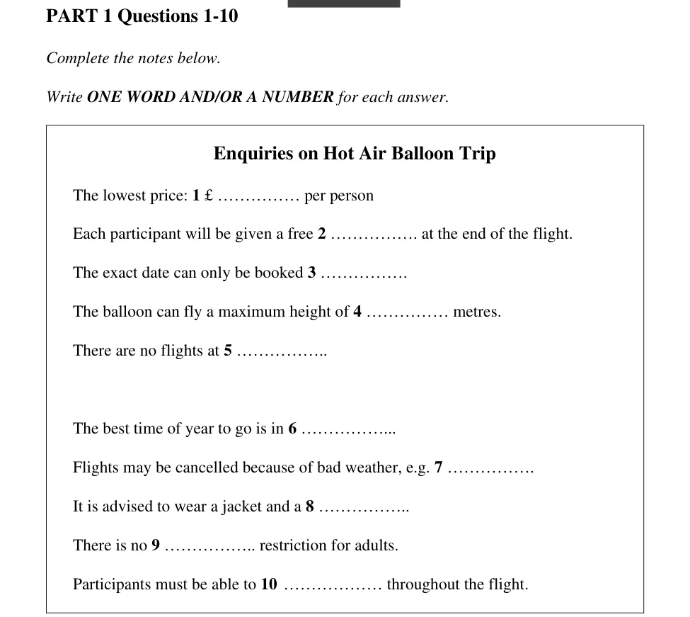

Recent Actual Test 7 · Listening Test 3
Listening and questions
Section 1Questions 1–10

Section 2Questions 11–20
Questions 11–18
Complete the table below.
Write NO MORE THAN TWO WORDS AND/OR A NUMBER for each answer.
Spring Festival
| Event | Location | Date and time | Other information |
|---|---|---|---|
| Firework display | Near the 11 | 4 September 9 p.m. | Pack a 12 and blanket |
| Display of 13 | Central Park | daily | Buses run from the town centre every 14 minutes |
| The 15 Show | Exhibition Centre | 10 – 15 September 9 a.m. – 10 p.m. | |
| ‘Grow Your Imagination’ | in the 16 | 11 – 19 September | |
| Swing in Spring | in the 17 | 17&18 September | Saturday matinee performance at 18 |
Questions 19–20
Choose the correct letter, A, B or C.
19 In the Spring Festival competition, you can win
20 You can get an entry form for the competition from
Section 3Questions 21–30
Questions 21–22
Choose TWO letters, A-E.
Which TWO points do the students most frequently make about their music background before entering music schools?
Questions 23–24
Choose TWO letters, A-E.
Which TWO points do the students most frequently make about their music practice?
Questions 25–26
Choose TWO letters, A-E.
Which TWO points do the students most frequently make about playing pieces that would be assessed?
Questions 27–30
What comment do the students make about the following practice?
Choose FOUR answers from the box and write the correct letter, A-G, next to Questions
27-30.
Comments
- A it is beneficial
- B it is challenging but also enjoyable
- C it helps to boost confidence
- D it is pleasant to hear
- E it is time-consuming
- F need to work effectively with others
- G it happens infrequently
Practice
27 Play solo
28 Choose a piece to play
29 Play different musical genres
30 Play duet
Section 4Questions 31–40
Questions 31–34
Choose the correct letter, A, B or C.
31 The speaker initially chose to do her research project on Dodds because she had
32 Dodds became an architect because
33 The reason for Dodds returning to northeast England was that
34 Dodds became well-known nationally when he
Questions 35–40
Complete the table below.
Write NO MORE THAN TWO WORDS for each answer.
| Building and date | Description | Problem with design | Present use of the site |
|---|---|---|---|
| Mitten Hall 1824 – 1826 | Had a dome made of glass | Windows tended to 35 | as a 36 |
| Royal Arcade 1832 | Shopping centre acclaimed for its large 37 | Difficult to make deliveries | as a 38 (for modem stores) |
| Morton Gaol 1839 | Had towers based on medieval castle design | No room for prisoners to do 39 | as a 40 |
Check your answers
Marking ignores capital letters and accepts plurals and the usual alternative answers. If your answer is right but not accepted, press My answer is also right under it.